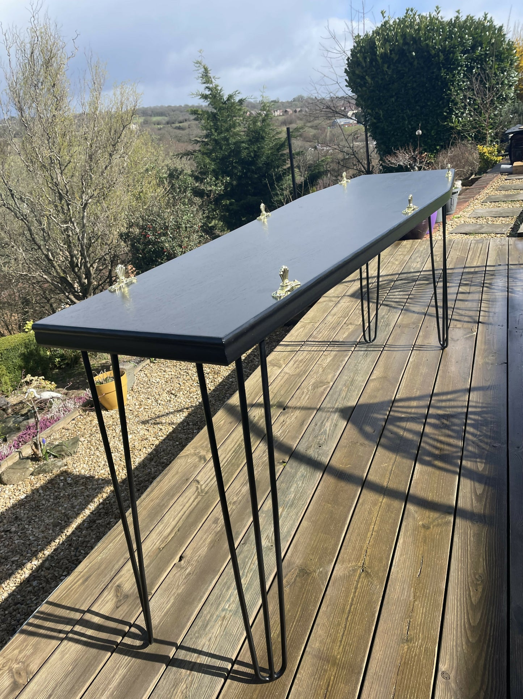
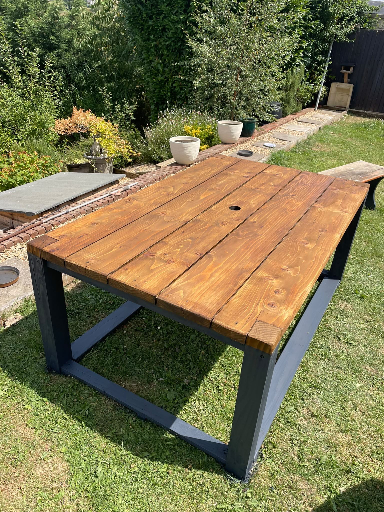
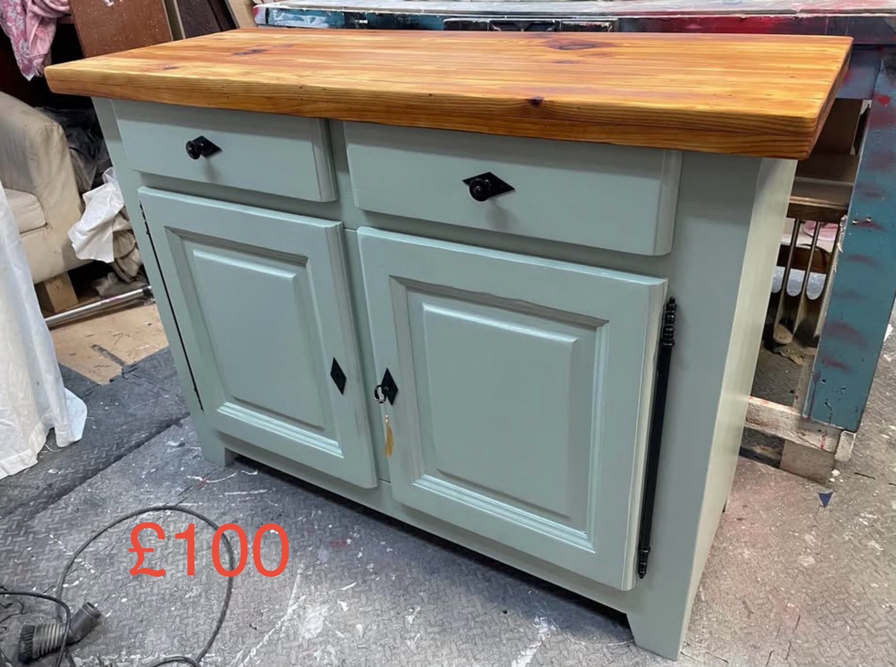

Made by hand in South Wales
FURNITURE
FOR PEOPLE
WHO DON'T WANT
ORDINARY.
The unusual, the bespoke and the beautifully restored. Made by Garry in Treharris.
01 / THE EMPORIUM
Some furniture fills a room.
Some starts a conversation.
From statement coffin pieces to clean modern restorations, GJ's is one maker with more than one side.

02 / SIGNATURE COLLECTION
Coffins & curiosities
BEAUTIFULLY
UNUSUAL.
Made-to-order coffin furniture, gothic pieces and wonderfully unexpected one-offs.
Explore the coffin collection →
03 / BESPOKE
Your idea, made real
GOT SOMETHING
IN MIND?
Commissions, transformations and builds that don't come from a catalogue.
Explore bespoke work →
04 / MODERN & RESTORED
The other side of GJ's
LOOKING FOR A
MORE MODERN FIT?
Have a piece worth keeping? Garry can restore and reimagine furniture you already own.
Explore restoration →
05 / AVAILABLE NOW
One-off. Ready to go.
FIND YOUR
NEXT PIECE.
See Garry's current furniture and one-off pieces available to buy.
Shop available pieces →
06 / THE ARCHIVE
Previously created
MADE ONCE.
REMEMBERED.
A growing archive of Garry's previous furniture, restorations and stranger ideas.
Browse past work →
07 / THE MAKER
Meet Garry
ONE MAKER.
PLENTY OF RANGE.
GJ's Emporium is Garry's workshop in Treharris. He restores tired furniture, builds one-off commissions and makes the wonderfully unusual pieces you won't find in ordinary furniture shops. You deal directly with the person making the work.
08 / YOUR TURN
Have an idea?
LET'S MAKE
SOMETHING
INTERESTING.
Commissions, restorations and current stock enquiries welcome.
Message Garry on Facebook →garrythomas1966@hotmail.co.uk07740 396333